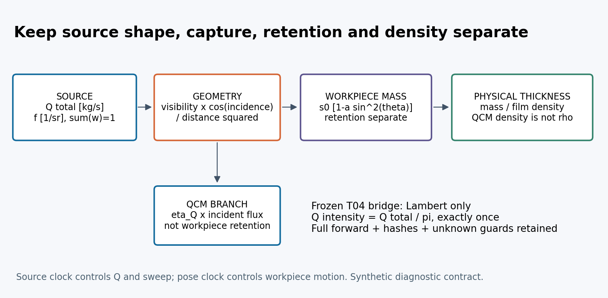
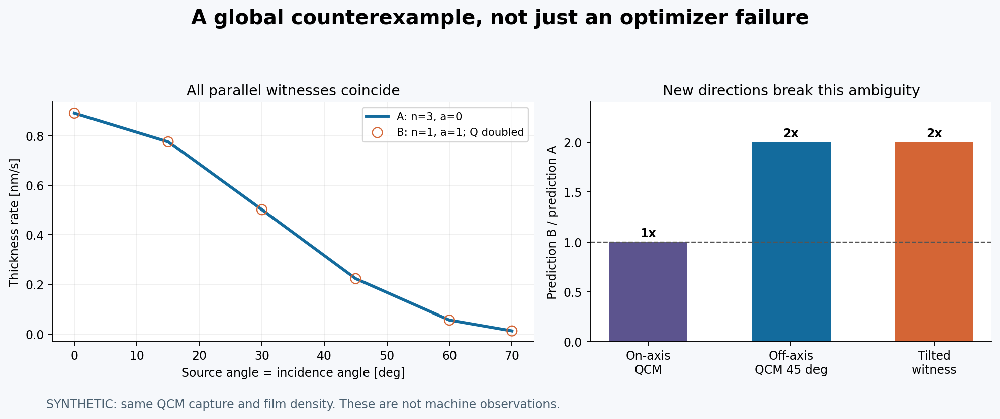
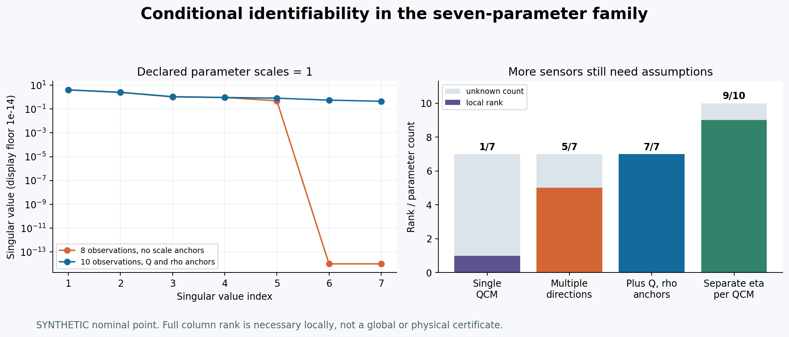

T05 第三轮 蒸发源与材料留存可辨识性
本地有界研究包 v0.1.0。核心结论：同一个轴上QCM和全部平行见证片可以同时对应两套不同源角谱/留存；改变接收法向、观测源方向并补足独立尺度证据，才可能在受限模型内分开它们。所有数值为synthetic，实际材料与设备参数仍unknown。
阅读顺序
1. 增量、单位与双时钟
2. 原始设备与论文实例
3. 反例与有条件测量设计
4. 完整T04桥接及算法
5. 复算、证据与限制
6. T06有界候选交接
reader.html是原创报告、图与来源摘要的本地阅读入口。reader ZIP自带33个hash绑定依赖，脱离兄弟目录可校验、复跑小测和确定性示例。不包含第三方原文或账户标识；不上传或发布。
已有可复算结果
- n=3、a=0与n=1、a=1、Q加倍的精确全局等效反例；新方向的合成响应相差2倍
- 7参数模型：单QCM秩1，多方向无尺度锚秩5，独立Q和ρ锚下局部秩7；每QCM自由捕集时10参数仅秩9
- 源总率、每立体角强度、有限源质量权重和接收投影分离；Lambert桥接只除π一次
- 保留整个T04响应及上游forward、依赖哈希、未知/负净/零分母guard；非Lambert明确不桥接
- 42项小测通过，最多一次独立窄量纲核查13项通过；3张PNG已逐张看像素
最小本地复算
现有Python环境已有numpy/scipy；不需要联网或安装。在解压后的独立目录执行：
PYTHONDONTWRITEBYTECODE=1 python verification/reader_check.py
PYTHONDONTWRITEBYTECODE=1 python -m unittest discover -s tests -v
PYTHONDONTWRITEBYTECODE=1 python models/diagnostics.py --output /tmp/t05r3-results.json
PYTHONDONTWRITEBYTECODE=1 python models/validation_driver.py
最后一个命令默认plan_only，没有执行500次待运行计划。检查checkpoint实现不代表已跑heavy。正式DeepSeek/Seed/Sol链pending；point12仍partial，point2仍条件非严格。HTML资源完整性已检查，浏览器布局因已知socket权限边界未验证，本轮不尝试升级/绕过。没有实机标定、连续源认证或生产放行。
蒸发源与材料留存的可分辨边界
1 本轮结论和相对于前轮的增量
同一条QCM曲线并不足以说明两个工件经历了相同源角谱，更不能证明相同材料留存。即使另有一整条平面厚度分布，源发射变窄与斜入射留存下降仍可能给出完全相同的观测。本轮用与T04一致的有界留存族构造严格代数反例，再说明怎样独立改变发射方向和接收法向，以获得有条件的区分证据。
T05第一轮已经讲过阻蒸/电子枪的热历史、束斑、有限源与归一化；第二轮已经实现频率到面质量、捕集/组分账、源角律拟合及Q与共同捕集率的尺度退化。这些结论不作为第三轮新成果。具体继承对照见 dependencies/context/03_identifiability_and_uncertainty.md。本轮新增的是：
1. 源角律n、c与工件角响应a的联合观测算子，含独立工件密度、QCM捕集和源总质量率
2. 单轴QCM加全平行见证片仍有全局等效解的反例；倾斜接收面的配对比值及其失效条件
3. 一条严格有界的Lambert桥接，只在兼容时调用原样复制的T04完整forward，不偷偷更换几何核
4. MXC反馈坐标、测量来源和双时钟作为诊断资格，阻止设备替代读数被当作独立实测
本轮不是新设备标定，也没有从论文材料名取指数填入用户机台。少量设备和论文事实只证明这些状态变化在现实工艺中值得区分。所有计算参数标synthetic；真实Q、n、c、s、ρ、料位、相态、扫束与温度仍unknown。37条已恢复配方不重建、不重分类。
2 源强的三种单位和两个面积
以相同来源组分为质量基准，定义：
| 量 | 定义 | 单位 |
| e(s,t) | 实际发射面单位面积的半球总质量率 | kg m⁻² s⁻¹ |
| Q_total(t)=∫ e dA_s | 指定发射面、挡边之前总质量率 | kg s⁻¹ |
| q(s,t)=e/Q_total | 源面质量分布，∫q dA_s=1 | m⁻² |
| f(s,u,t) | 半球内归一化方向密度，∫f dΩ=1 | sr⁻¹ |
| I(u,t)=Q_total f | 点源每立体角质量率 | kg s⁻¹ sr⁻¹ |
| j_in(x,t) | 接收真实面积上的入射质量通量 | kg m⁻² s⁻¹ |
f已经包含源角分布，却不含接收面投影。对从源指向工件的单位向量u：μ_s=n_s·u，μ_i=−n_i·u。
f_n,c = (n+1)/(2π) μ_s^n [1+c(1−μ_s²)cos(2φ)], μ_s>0
f=0 otherwise; n≥0, |c|<1
j_in = Q_total f_n,c max(μ_i,0) V / r²
φ在记录的源局部切平面中定义。方位项对φ积分为零，因而∫f dΩ=1；n=1,c=0时f=μ_s/π。若用质量辐亮度L定义dQ=L μ_s dA_s dΩ，Lambert面满足e=πL。只可在这两种口径之间换一次，不能漏1/π，也不能在已有f外再乘μ_s。
有限源核为
j_in = Q_total ∫ q(s) f(s,u) max(μ_i,0) V/r² dA_s
≈ Q_total Σ_k w_k f_k max(μ_i,k,0) V_k/r_k²
w_k是包含面积求积权的无量纲质量分数，Σw=1。模型拒绝不归一化的输入，不偷偷重标；代码容许1e−12绝对浮点和误差。不得再乘源面积。接收面平均还需另一层接收面积积分，当前诊断只把接收器当小面元，不模拟QCM敏感度形状。质量权重不是电子束功率权重，也不是CAD网格单元个数。
口沿/挡板使V变小，质量不得重新归一化补回来。若Q在口外定义，则必须改写角律及可见性合同，不能再扣同一个口沿。飞溅、放气和多组分挥发未分账的源料失重不是这个Q_total。
3 留存和密度不折入角谱或tooling
为与T04有限有界响应对照，本轮仅采用合成族
s(μ_i)=s0[1−a(1−μ_i²)], 0<s0≤1, 0≤a≤1
j_ret=s j_in
dh/dt=j_ret/ρ_film
它表示随斜入射降低的有限示例，不声称任何真实材料普遍服从该族。QCM观察为y_Q=η_Q j_in,Q，其中η_Q为该测量窗口内共同净捕集系数；工件s与冷却晶体η_Q是不同参数。厚度观察额外除实际成膜状态密度ρ；QCM仪器密度设置和源料块密度不得填作ρ。
反应吸氧/失氟、多组分、再蒸发和库存耗尽必须回到T04逐物种或逐元素质量合同。本轮即时诊断仅处理正的净增量，拒绝对零或负数取对数，不以小正数替代。完整T04桥接保留负净沉积、跨零、近零和库存不足的状态，但不会把负变化奖励为更好的正生长目标。
4 角度和时钟是不同的自由度
源角θ_s取决于源法向和射线路径；入射角θ_i取决于工件法向和同一射线。平行平面常使二者相等，正是不可辨识的根源之一。更换距离但保持同一方向通常只改变平方反比，不创造独立角信息。
在共同参考时间t上单独记录源时钟t_s=t+δ_s与工件位姿时钟t_p=t+δ_p。Q(t_s)、源热历史和扫描相位使用t_s；x(t_p)、n_i(t_p)使用t_p。改变δ_p不能重新计算源热过程。数值例中q=1+0.2t，在t=1时将位姿偏移改为0.5s，q仍为1.2而位置改变；将源偏移改为0.5s才使q=1.3。两个偏移的现实值均未知，这不是任何机台的延迟测量。
飞行时间在本轮忽略；若其相对时窗不可忽略，应引入速度分布的发射时间卷积，不能当成工件位姿偏移硬加。对累计QCM窗口与运动工件窗口，也不能用两个不同时窗的瞬时比值替代各自积分。

图1 源强 角谱 捕集 留存与密度分别保存；synthetic示例
少量源设备实例与工艺状态记录
1 怎样使用来源
这里只保留能说明辨识问题的少量一手实例，重读原始设备页面/手册或论文相应章节。它们不是本机参数表；部分证据在第一轮已用过，本轮新意是把这些事实转换为可拒绝错误归因的记录合同。网页核查日期2026-10-02，精确URL、版本与读取范围在sources/source_registry.json。没有复制受限手册全文。开放论文原文单独本地保留，不装入reader。
2 阻蒸并不等于同一种源面
KJLC技术说明把直接加热舟/丝/棒和隔着容器的间接加热区分开，并区别小孔经典Knudsen源与大口径蒸发单元。小孔、温度近均匀等条件支持理想余弦出射；同类商品名称并不保证这些条件。它还指出间接加热增加热质量。KJLC技术说明，Direct/Indirect Resistive Heating、Knudsen Cells、Evaporation Cells。
KJLC的Cr实例说明升华固体和熔池不能混为一谈：其Cr镀层钨棒通过接触传热，具有料量受限、一次使用的条件；舟装Cr块的传热路径不同。Cr工艺说明，Thermal Evaporation。
据此，本报告提出以下记录，而非提供设备操作处方：
| 实际源状态 | 应记录什么 | 对Q、q、f可能的影响 | 不能用什么替代 |
| 固态/颗粒/升华 | 有证据的相态、接触变化、局部退缩、暴露面积 | 热接触和活跃区同时变化 | 虚构液位或仅材料熔点 |
| 液态开放熔池 | 液面高度、源口几何、表面法向、耗料历史 | Q与口沿裁剪/角谱相关 | 单个功率值 |
| 小孔间接加热 | 孔几何、温度均匀性证据、装料和污染历史 | 通量及方向分布 | “Knudsen”商品名称 |
| 热惯性显著源 | 预热、保持、降功率、冷却及再次露出事件 | 挡板动作后仍可有真实源尾 | “功率为零所以通量为零” |
相态判别有不确定时保存unknown及证据，不靠Cr、MgF₂或Al的名字填n。原厂个别温度、功率和沉积速率实例不搬成通用阈值。
3 电子枪的控制坐标不等于蒸发坐标
Temescal 2PT/3PT Rev B手册明确区分发射电流、偏转线圈和束斑形状/位置；§4.2说明束位置、尺寸和密度可能同时变化，§1.5.3列出扫束功能，§4.3警示束打到坩埚边缘可导致污染与损伤。原厂手册，§1.5.3、§4.2–4.3。
因此记录必须保留至少三层：电气命令与实际反馈；束斑轨迹/驻留及校准版本；由温度、相态和物种决定的质量发射分布。电子束在A点停留两倍时间，并不能据此断言A点蒸发质量恰好两倍。源表面辐射/导热、相变、蒸气压的非线性使这一等同缺乏依据。
建议把快扫描均匀化仅当作有条件近似：扫描相位必须相对采样窗口足够覆盖，热响应和源变化须可忽略或有模型。若QCM、见证片和工件只看到不同相位子集，应做相位标记而非把差异拟成材料留存。液位下降也会同时改变活跃面位置和口沿遮挡，不宜用单个n随意吸收。
这些是数据合同及诊断策略，不提供高压、磁路、冷却或联锁调整步骤。设备异常按现行原厂程序交给受训人员；本包没有操机接口。
4 真实论文证明需要保留角度约定
Zhang与Cai的原始实验使用SYRUSpro 1110 DUV、Mo舟和MgF₂/LaF₃，在曲面夹具上进行薄膜分布与mask研究；其厚度来自透射谱拟合。文中式(1)使用cosⁿα cosᵐβ/r²，并报告该设备条件下的拟合指数。论文，§2–3、式(1)、图2。
本报告自己的判断是：式(1)的m是整个接收角因子指数，包含投影的经验效果，不能把cosᵐβ作为额外留存概率再乘一次cosβ。特别是m<1时，若强行定义s∝cos^(m−1)β，接近掠入射会发散，不能直接成为全半球0到1的留存概率。应保留拟合的角域、几何、密度和光学反演条件；本轮合成有界law不拟合该论文，也不抄n/m到真实模板。
该论文说明曲面法向变化在现实设备上可发生，却不证明本轮任意多参数模型已经被数据唯一识别。论文的经验拟合与本轮结构可辨识证明是不同证据。
5 MXC经验变成输入资格，而非万能tooling
本项目已有MXC手册派生评估，见dependencies/context/manual_assessment_zh.md。沿用的证据包括印刷39页/PDF40页的反馈坐标、45/46页失效替代、66–68/67–69页控制延迟、72–73/73–74页共享挡板热尾、78/79页耗料与坩埚状态，以及取样与日志带宽区别。继承摘要不等于本轮重读全部原手册；版本与页码沿用该评估，不补造用户机型/固件。
本轮输入门实际检查locked、来源类型、实际可见性、时钟映射、材料快照、反馈坐标和共享源时窗。失锁后的设定值替代或外推速率即使数值光滑，也不进入实测角律拟合。资格通过只允许“条件诊断”，并不证明声学、热漂移和材料假设成立。
INFICON SQC-310的源控制讨论也将源的响应与沉积状态联系，测量章节保留晶体温度/应力干扰边界。它是跨厂商的语义核对，不能替代MXC模式定义。SQC-310手册，§10.5–10.6、§11.2。
6 应怎样解释现场异常
同QCM而工件边缘变薄：至少同时保留源角谱变、工件留存变、密度变、QCM捕集变和时窗错配几个候选。多角QCM一致而倾斜见证片比值变，才更支持接收响应变化；仍应检查密度/组分和见证片可见性。多角QCM比例本身变，则不能只改工件密度。功率升高而QCM不变，可由热接触、耗料、控制坐标或传感器状态导致，不能单独决定是哪一项。
建议的处理顺序是先核对观测来源和设备事件，再核对窗口/几何，最后做小模型的秩和残差诊断。先用动态tooling把所有残差压到零，会销毁区分原因所需的信息。
联合可辨识性与有条件测量设计
1 单QCM约束的是哪一项
只看正的、已校正声学和漂移的面质量速率：
y_Q = Q_total η_Q (n+1)/(2π) μ_s^n
[1+c(1−μ_s²)cos2φ] μ_i V/r²
轴上μ_s=1，源形状n只通过(n+1)与Q_total乘在一起，方位c完全消失。一个QCM不会直接观察工件s0、a、ρ；增加采样频率若只是重复相同状态，不能创造这些参数的信息。只有假定某些状态固定并有独立证据，时间序列才可能增加有用约束。
第二轮已经证明Q与η_Q不能从共同QCM尺度中分开。本轮进一步把工件观察加进来：
y_h = Q_total s0/ρ × f_n,c μ_i V/r² × [1−a(1−μ_i²)]
把Q、η_Q、s0、ρ都自由化，有两个独立尺度自由度未被观察。对于处于物理内部的参数，小范围变换
Q→λQ, η_Q→η_Q/λ, s0→s0/λ
s0→κs0, ρ→κρ
均保持全部QCM与厚度观测不变。这是结构退化，不是优化器不够快。给这些量加狭窄先验只缩小允许集合，不能声称数据本身辨识了它们。
2 全平行厚度分布也可能完全相同
取无遮挡平行源/工件，μ_s=μ_i=μ、c=0，同一个r(μ)。两套synthetic参数：
| 参数 | A | B |
| Q_total kg/s | 1×10⁻⁶ | 2×10⁻⁶ |
| n | 3 | 1 |
| s0 | 0.7 | 0.7 |
| a | 0 | 1 |
| ρ kg/m³ | 2000 | 2000 |
| η_Q | 0.8 | 0.8 |
A的厚度核正比4Q_A μ⁴；B正比2Q_B μ²·μ²。Q_B=2Q_A，故对任何μ和任何相同距离规律完全相同。轴上QCM也相同，因为两套Q(n+1)相等。只要工件法向仍平行，多加一百个位置也不能消除这一全局等效解。
当θ_s=45°而工件法向转为正对射线，即θ_i=0°时，B预测是A的2倍。再加一个已知共同捕集规律的45°QCM，也给出2倍的差异。计算值见data/tiny_results.json；轴上QCM为2.03718327×10⁻⁶ kg m⁻² s⁻¹。倾斜见证片A为3.15110711×10⁻¹⁰ m/s，B为6.30221421×10⁻¹⁰ m/s。这些不是用户设备测量或工艺目标。
这一反例并不是“必须有多台QCM”设备采购建议，而是说明新观测必须打破已有方向耦合。源影像、独立角谱或可控法向见证片可能提供同类信息，但各自资格不同。
3 配对倾斜接收面能消去什么
设两个小见证面对应同一个源位置/方向、同一时窗、同一材料与表面状态、相同距离和可见性，只改变接收法向。若测的是净留存面质量率，定义
R = (m1/μ1)/(m2/μ2)
= [1−a(1−μ1²)]/[1−a(1−μ2²)]
a = (1−R)/[(1−μ1²)−R(1−μ2²)]
Q、f和s0消掉，仍未得到绝对s0或ρ。例取μ1=1、μ2=0.5、a=0.4，则R=10/7，代数恢复a=0.4。相同角度时分母为零，代码拒绝；正投影、正质量和显式分母下限也必须满足。
真实物理上两个有限大小样片不能占据完全相同的空间。因此“同一源方向”是小面元极限，实际应测量两片的几何差，或用交换/对称布置评估误差。源非均匀、遮挡不同、倾角改变温度/能量/成膜密度，都会破坏直接消元。用厚度代替面质量只有在两片密度相同且有证据时才成立。依次旋转同一片也不自动合格：Q(t)、n(t)或扫束相位变化会进入比值，需要同步参比和稳定性证据。
未知量以区间给出时，应对质量、几何和共同误差建立联合情景或区间求解。名义分母不接近零不够，整个分母不确定集合必须离开零。本轮实现的是严格输入门加点值代数，没有给出噪声下a的区间证书。
4 七参数局部诊断
选参数坐标β=[logQ,n,c,logη_Q,logs0,a,logρ]。对一个厚度观测，log雅可比行为：
[1,
1/(n+1)+log μ_s,
b/(1+cb),
0, 1,
−u/(1−au),
−1]
其中b=(1−μ_s²)cos2φ，u=1−μ_i²。QCM行把第4列设1、第5/6/7列设0。独立源率行只有第1列1；独立膜密度行只有第7列1。质量见证片不含最后−1。
用白化J_w=diag(1/σlog) J diag(parameter_scale)计算SVD。代码保存所有奇异值、阈值、秩、参数尺度和噪声值；满列秩才给条件数。单位不同或缩放不同，条件数不能跨实验随意比较。默认报告σ=1仅用于结构示例，不是仪器噪声估计。
轻算设计包括4个不同源方向/方位QCM、4个改变接收法向的工件厚度观察，以及同口径源率与真实膜密度两个独立观察：
| 设计 | 行×列 | 秩 | 能说什么 |
| 单轴QCM | 1×7 | 1 | 不足以辨识源形状和材料参数 |
| 多方向QCM与倾斜见证片，无独立尺度锚 | 8×7 | 5 | 两个尺度自由度仍在 |
| 加独立Q_total及ρ观察 | 10×7 | 7 | 这个名义点、这个受限模型的局部必要条件满足 |
| 每个QCM另给自由捕集率 | 10×10 | 9 | 原先“共同η_Q”假设移除后再度退化 |
满秩例条件数约9.1248，只属于这里声明的参数尺度和名义点。满秩不能排除远处等效解、模型错误、边界解、未知几何或弱信号，也不构成实机合格证。
5 现实设计的先决条件与停止条件
独立Q_total必须量到同一物种质量口径、同一时间窗和同一挡边定义。仅称坩埚前后失重而不排除喷溅、挥发副产物/壁面交换不能当成锚。密度锚必须属于同一膜状态和深度口径，块料密度或仪器显示参数不合格。
先做观测资格和单位核查，再固定几何版本与源状态窗口；规划多个θ_s及方位，加入独立θ_i变化；检测秩亏和近病态，最后才拟合。残差应按角度、方位、时间、料位/批次分组；保留新方向或新时段，不能同一数据既定义形状又验收形状。若工况间参数有明显漂移，分状态建模并报告，不能不断加自由参数直到全部数据恰好拟合。
本轮停止在设计、synthetic小测和完整待运行driver。未安排实验、未改变任何设备设置、未申请重算旧point2/point12。真实输入或测量授权缺失时，只报告待定项，不用“经验tooling”填平。

图2 全局等效反例与新方向诊断；synthetic示例
冻结响应桥接与完整算法
1 哪些角谱可以进入T04
T04完整forward内的几何核为A q(t) H²/(H²+y²)²，它已经包含Lambert的源余弦、接收投影和距离平方反比，但质量强度系数没有自动包含1/π。其几何/事件资格、留存区间、目标区间、负净生长和point2/point12边界不能被本轮绕过。
bridge_t04只接受n=1、c=0、A=1、归一化且静态的有限源质量权重，并把总率区间变换为Q_intensity=Q_total/π。此处Q_total_bounds_kg_s是参考源率尺度区间，瞬时半球总率等于该尺度乘原场景q0+q1·t；不是在每一时刻都相同的总率。调用者必须显式把Response.source_scale_kg_s置null，防止同一个源率同时在两处填值；桥接填入一次且保留所填值。代码复制T04 models/bounded_response.py及其全部嵌套依赖，先逐项验SHA256再调用原有forward；没有改其函数、事件解或积分定义。
未知角律返回unknown_source_angular_law；已知非Lambert返回unsupported_non_lambert_frozen_bridge。这两个状态不输出伪造的T04厚度或目标。未知Q或留存则在支持的Lambert桥接中继续得到完整上游几何信息和明确missing字段。新诊断模型能分析一般n/c，不意味着冻结几何核已经支持它们。
有限源面3D点求和仅是诊断库的点值计算；T04仍是其原先的一维离散源节点/仿射运动/有限厚板场景。不能把前者的数值和结果塞进后者，冒充拓扑资格或连续源证书。每个源状态变化都需要重新绑定场景与合同，不能从一张拟合表跨状态借用认证。
2 完整保存的上游内容
桥接输出嵌套保存t04_response整个对象，其中包括upstream_full_forward、response_contract_sha256、response_definition、设计、质量与厚度区间、材料目标、梯度及资格。bridge_contract_sha256再绑定本轮源合同、T04响应哈希、所有复制依赖哈希及桥接程序哈希。源总率、角谱、权重或响应变化会改变身份；不能只保留一个D值然后宣称材料响应合同没变。
代码用浮点π把Q_total转换成浮点系数，T04有理包络针对这些编码浮点输入有效。这不声称对数学常数π或输入Q测量误差给出了严格外向包络；若未来需要此层精度证书，需显式给π/归一化转换的外包而非把当前编码结论扩大。
T04原有response_contract_sha256绑定材料与固定几何，板参数属于设计变量；比较不同源/材料情景时不能绕过合同相等条件。point12始终partial_unchanged，point2始终conditional_non_strict_unchanged。物理资格与连续源资格均false，指定DeepSeek/Seed/Sol正式链pending。
3 完整条件诊断流程
输入是同窗的正面质量/厚度速率及可选独立Q、ρ观测，每行几何明确。当前自动driver只接受包内synthetic输入，不提供真实机台文件适配器。
1. 验证单位、原始/替代来源、锁定、真实可见性、材料快照、源/位姿时钟、共享时窗。未知不是零
2. 冻结源口径、源面/角律、接收几何和材料law；同源窗口只拟合共同参数，不在看见残差后默默放宽
3. 在声明参数尺度上计算解析雅可比、SVD秩与条件数，秩亏就停止拟合
4. 在显式有界坐标中最小化Σ[(log y_pred−log y_obs)/σlog]²。这里sigma是已知独立合成对数噪声，优化器为有界least_squares、线性损失，最多100次函数评估
5. 保存收敛、活动边界、完整加权残差和末点SVD。不因收敛而删除不可辨识警告；满秩内点才输出(J_wᵀJ_w)⁻¹局部协方差，边界/失败返回null
6. 在独立方向、时间窗口或批次验证并检查模型偏差。当前driver重复已知合成真值加噪并保存每次拟合；这一步不能替代现实留出验证
7. 只有兼容Lambert子域才调T04完整forward；非兼容角谱保留待研究状态。重测几何/反应材料/高速扫描并不在本轮自动升级
搜索域Q=10⁻¹⁰…10⁻² kg/s、n=0…12、|c|≤0.95、η_Q及s0=0.01…1、a=0…1、ρ=100…20000 kg/m³，只是synthetic算法范围，不是任何材料或设备先验。真实问题应从证据建立范围与噪声模型；本包不将其转换为生产默认值。
4 driver的运行、预算和恢复边界
默认命令python models/validation_driver.py只输出plan_only_no_execution。冻结计划500次拟合、每次最多100函数评估，尚未运行；500不是统计覆盖率保证。--run要求新计划同时写入explicit_authorized_run、明确授权证据、已恢复主机权限、设备标识和正确输入哈希，并提供包外全新输出目录。任何一项缺失即拒绝。
执行代码保存run_plan、每次已完成拟合后的checkpoint及最终results；CANCEL文件和墙钟预算在两次有界拟合间检查。中断后checkpoint保留已完成结果；没有自动续跑/合并功能，要新授权计划和新输出重启，避免重复计数或混合不同输入。墙钟上限不是硬实时抢占。driver不包含SSH、网络、硬件I/O、远控替代、主机quota探测或安装命令。
本轮只运行42项小测、确定性反例和默认plan_only。单次无噪声拟合用于实现核查；未跑500次计划、连续源收敛、真实设备、旧point2/12或离子参考。独立量纲核查最多一次，仅验证归一化和桥接，不是完整模型审查。

图3 局部秩与独立尺度条件；synthetic示例
复算证据与适用限制
1 内容和证据位置
| 内容 | 输入/实现 | 证据 |
| 归一化与有限源 | models/source_retention.py | tests/test_source_retention.py及独立量纲结果 |
| 联合秩与全局反例 | models/diagnostics.py | data/tiny_results.json |
| 条件拟合与资源driver | models/validation_driver.py | 42项小测中的无噪声恢复、拒绝秩亏和未授权执行 |
| 实际状态保留unknown | data/unmeasured_source_template.json | 独立字段、不按材料名补参数 |
| T04完整依赖 | data/frozen_dependencies.json | 每个副本源相对路径、字节数和SHA256 |
| 小测原始输出 | verification/unit_tests.log | 原始unittest计数与状态 |
| 唯一窄独核 | reviews/INDEPENDENT_UNIT_CHECK.md | 13项、仅单位与归一化/桥接 |
| 视觉与阅读器 | verification/visual_check.json | PNG逐张像素检查；HTML仅静态结构/链接 |
| 精确冻结身份 | verification/reader_manifest.json | 每项载荷路径、字节数、SHA256 |
| ZIP与脱离目录复算 | verification/release_receipt.json、detached_reader_verification.json | ZIP SHA256、精确成员、独立目录执行结果 |
原始文件在新目录外的基线快照只供本地修改范围检查，不装进reader。origin_integrity_check.json给出范围核查结果。冻结清单不把自身或包含其哈希的receipt再纳入payload，避免循环自校验；ZIP包含载荷和manifest，但不包含ZIP自己、原文、pycache或本地范围快照。
2 已运行的小计算
42项单元测试包括半球积分、Lambert 1/π、源/接收投影不重复、有限源权重、可见性不重归一、角域/参数/负量拒绝、全局等效反例、倾斜诊断、解析雅可比与中心差分、7参数秩、单次无噪声拟合、完整forward相等、unknown保留、非Lambert拒绝及driver默认不执行。
一次独立核查使用自己写出的角积分和移动目标原函数，13项通过；它没有重写模型或重新做整套科学审查。独立脚本是可读复核材料，本轮只执行一次。reader脱离测试复跑的是42项常规小测、确定性结果和默认plan_only，不再次调用独核脚本。
半球归一化最大独核误差约1.21×10⁻¹⁴；这是离散求积与双精度的数值一致性，不代表实机蒸发角谱精度。没有给真实参数置信区间。名义满秩不等于全局唯一解，独立Q/ρ/共同η_Q的假设必须另有证据。
3 图像和HTML
三张图各有PNG/SVG。PNG已经实际打开逐张检查：标签、图例、单位、synthetic声明可读，没有截断/遮挡。图3把低于10⁻¹⁴的奇异值画在明确标注的显示下限，原始奇异值保存在JSON，不把绘图下限解释为数值误差或秩阈值。
渲染期间Fontconfig报告默认字体缓存目录不可写，但PNG/SVG成功生成并做像素检查。没有修改权限或安装字体以绕过。HTML生成器使用本地静态内容，reader检查器核查链接、锚点和资产；已知socket/浏览器布局权限限制未恢复，本轮不重复探测或换路线，因此不能声称浏览器布局验收通过。
4 未运行和仍未知
未运行500次噪声重复driver、实际设备/源控制、连续源离散收敛、任意非Lambert到T04事件核的扩展、反应/碰撞输运、源温度求解、多层QCM声学、旧point2/12参考或离子参考。用户主机quota/权限未恢复，本轮没有尝试远控替代。正式DeepSeek、Seed与Sol指定审查链均pending。
真实输入缺口包括有效组分Q、源相态/耗料/热史、质量发射面与扫束关联、原始频率资格、实际捕集、工件留存/密度、几何/法向/时窗/遮挡误差，以及这些误差的相关性。源码中合成搜索域不解决缺口；状态模板中的null必须保持到有来源证据为止。
本包不修改root STATE/ROADMAP、第一/二轮、已冻结上游、产品或37条配方。只在新第三轮目录写入；本地冻结后停止，未push、未upload，未启动T06。
SR-C01 项目MXC手册工程派生评估
来源：../dependencies/context/manual_assessment_zh.md
定位：printed/PDF page pairs 39/40,45/46,66–68/67–69,72–73/73–74,78/79
原创摘要：反馈坐标、失锁替代、时序和共享挡板热尾的合同背景。
边界：只继承经核对的派生分析；本轮未重读受限原文，不将机型/固件认作用户实机。
读取/权利：inherited_project_analysis_read_local；original summary and link only; primary original excluded from reader
SR-S01 KJLC Evaporation Sources Technical Notes
来源：https://www.lesker.com/newweb/evaporation_sources/evaporation_technicalnotes_1.cfm?pgid=0
定位：Direct/Indirect Resistive Heating; Knudsen Cells; Evaporation Cells
原创摘要：直接和间接加热源的热质量/几何不同；小孔Knudsen条件与大口径蒸发单元区分，名称不能保证余弦角律。
边界：定性设备背景，不提供本机n、Q、温度或时常。
读取/权利：relevant_primary_sections_direct_web_recheck；original summary and link only; primary original excluded from reader
SR-S02 KJLC Chromium Cr Evaporation Process Notes
来源：https://www.lesker.com/newweb/deposition_materials/deposition-materials-notes.cfm?pgid=cr1
定位：Thermal Evaporation of Chromium
原创摘要：厂商Cr实例存在固态升华、镀Cr钨棒和舟装块料；传热及活跃面不同。
边界：本轮不复制具体设备功率/速率，不按材料名自动填液位和角指数。
读取/权利：relevant_primary_sections_direct_web_recheck；original summary and link only; primary original excluded from reader
SR-S03 Temescal 2PT/3PT PopTop Electron Beam Turret Sources Manual Rev B March 2021
来源：https://e-beam.ferrotec.com/wp-content/uploads/sites/7/Temescal-2PT-3PT-Source-Manual-RevB.pdf
定位：§1.5.3; §4.2–4.3, printed 4-3/4-4 and 4-8
原创摘要：发射电流、束偏转和束斑形状位置有不同物理角色；束触边会污染并损伤坩埚。
边界：不提供调整SOP、联锁旁路或本机束斑参数；没有把功率权当质量权。
读取/权利：relevant_primary_sections_direct_web_recheck；original summary and link only; primary original excluded from reader
SR-S04 Zhang L, Cai X (2013) Uniformity Masks Design Method Based on the Shadow Matrix for Coating Materials with Different Condensation Characteristics
来源：https://pmc.ncbi.nlm.nih.gov/articles/PMC3817662/
定位：§2–3, Eq.1 and Fig.2; DOI 10.1155/2013/160792
原创摘要：Mo舟、MgF2/LaF3、曲面夹具及透射谱拟合厚度；经验接收指数应按其完整公式理解。
边界：本轮不搬拟合指数到用户机台；m不是额外留存概率；论文实测不是本轮synthetic验证。
读取/权利：relevant_primary_sections_direct_web_recheck；CC BY original credited in separate local archive; deliberately excluded from reader
SR-S05 INFICON SQC-310 Operating Manual 074-550-P1-H
来源：https://www.inficon.com/media/11922/download/SQC-310-Operating-Manual-.pdf?inline=true&language=de&v=2
定位：§10.5–10.6 pp139–144; §11.2 p147
原创摘要：控制响应受源料位、速率、扫束/束密度和源状态影响；晶体频移含热/应力干扰。
边界：原厂控制参数定义不跨设备移植；不能凭单频把干扰与质量完全分开。
读取/权利：relevant_primary_sections_direct_web_recheck；original summary and link only; primary original excluded from reader
T06 第三轮候选交接 条件光学响应
这里只交接候选，不启动下一题。T05R3已给出源角谱与工件留存的严格等效反例、有条件方向诊断、默认plan_only的完整driver和仅限Lambert的T04桥接。不能将未知源/留存/密度变成一个tooling值后交给光学层。
建议T06只解决一个问题：在材料身份和光学测量条件固定的情况下，如何把有界净厚度及其来源资格传给近红外/中红外/多光谱的一项受限光学目标，并判断哪些光学差异是真正可区分的。
1. 先对照T06首轮/第二轮已有的工艺状态、n/k与测量算子，明确新问题，不重做37条配方分类
2. 继承T04完整forward、response_contract_sha256及T05桥接源合同，不只取一个厚度点值。仅支持的Lambert路径可继承其资格；非Lambert和unknown继续unknown
3. 净负/跨零/近零与库存不足不变成正常正膜厚；真实膜密度、成分、n/k仍需对应样品状态，不能用QCM设置或块材常数顶替
4. 选少量有原始数据的薄膜/基片和受限波段；严格区分几何厚度、光学厚度与入射/背面/偏振/带宽条件。无真实参数就标synthetic
5. 保留共享误差相关性，例如同一Q/ρ影响多层不能按独立层误差任意采样；不把满秩、拟合收敛或漂亮光谱当生产资格
6. 完整算法和重driver默认plan_only；只做小核查，不借题补旧point2/12、离子参考或绕主机权限。point12仍partial，point2仍条件非严格，正式模型链pending
7. reader自带hash绑定依赖、原文单独本地、PNG实际看像素；HTML若仍受限如实标未验证
交付止于有界光学传递和下一题候选。此包没有启动T06、设备实验或发布动作。